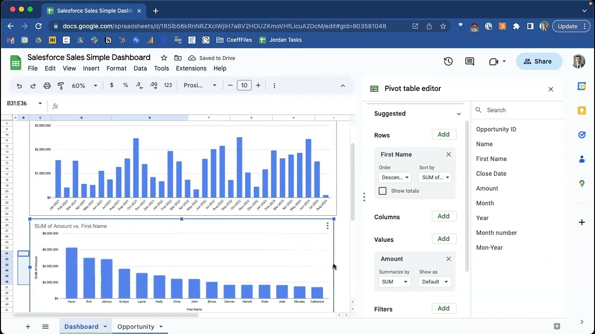
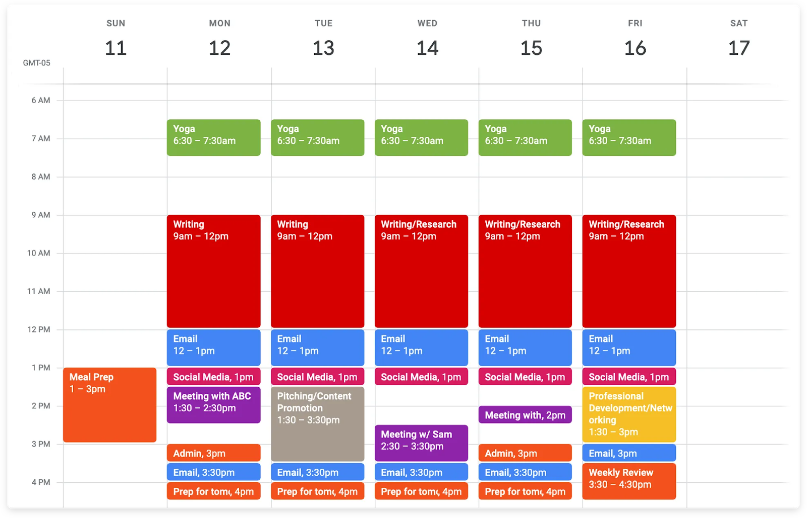
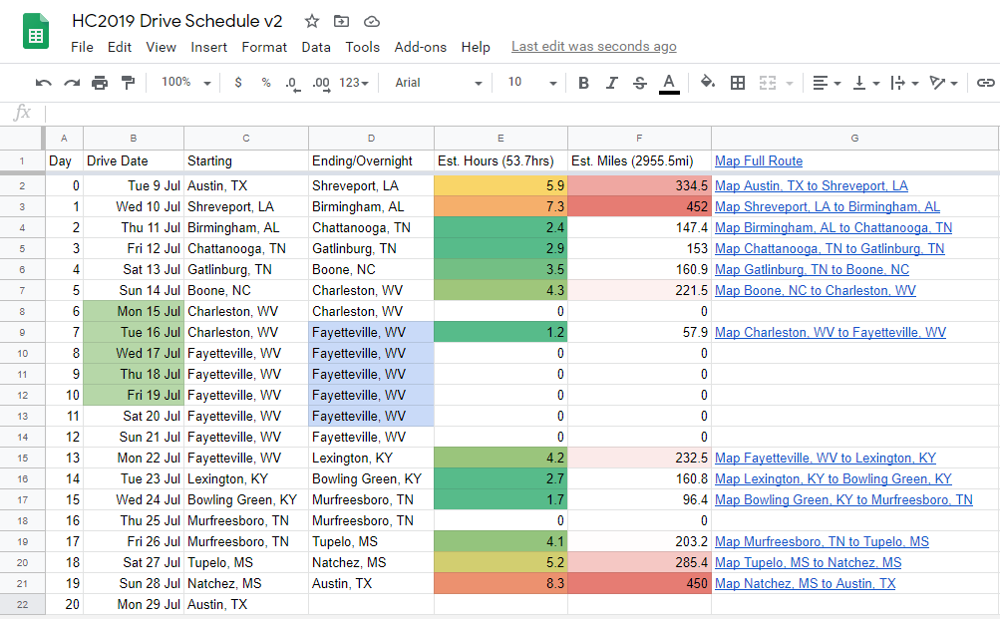

Data Analysis & Insights
- Data cleaning and preparation
- Dashboards and data visualization
- SQL, Excel, and Power BI
- Trend and performance analysis
- KPI tracking and reporting
- Decision support for leadership
I help executives make confident, data-driven decisions through strategic analysis, operational precision, and executive-level support.
View My Work

Executive inbox and email management system prioritizing urgent communications, organizing workflows, and ensuring timely responses on behalf of senior leadership.
Read More
Automated reporting system reducing manual data handling and errors.
Read More
Executive calendar optimization framework supporting multiple time zones.
Read More
Detailed executive travel itinerary planning, coordinating routes, schedules, overnight stays, and logistics to ensure smooth, time-efficient business travel.
Read MoreProblem: Manual reporting delayed executive decisions.
Action: Designed automated Power BI dashboards.
Result: Increased reporting efficiency by 40%.
Problem: Conflicting priorities across leadership schedules.
Action: Implemented structured, priority-based scheduling.
Result: Supported 3+ senior executives with zero scheduling conflicts.
Problem: Inconsistent workflows causing execution errors.
Action: Built standardized SOPs and documentation.
Result: Reduced operational errors by 30%.
Problem: Limited visibility into performance trends.
Action: Delivered executive-ready data insights.
Result: Enabled data-driven decisions impacting revenue growth.
Problem: KPIs were fragmented across tools.
Action: Centralized metrics into unified dashboards.
Result: Improved leadership visibility by 50%.
Problem: Time constraints limited deep market analysis.
Action: Conducted targeted research and briefings.
Result: Saved executives 10+ hours/week in preparation time.
Problem: Leaders spent hours preparing for meetings.
Action: Created executive-ready briefing packs.
Result: Reduced prep time by 60%.
Problem: Inbox overload caused missed priorities.
Action: Implemented filtering and priority triage systems.
Result: Executives responded faster and missed fewer items.
Problem: Manual approval steps slowed project execution.
Action: Created automated workflow notifications and approvals.
Result: Approval times dropped by 35%.
Problem: Multiple dashboards caused confusion.
Action: Standardized format and KPIs across dashboards.
Result: Leadership gained clear and consistent insights.
Problem: Complex travel schedules caused delays and missed meetings.
Action: Coordinated travel and appointments in one system.
Result: Leaders arrived prepared and on time for all engagements.
Problem: Sensitive materials were manually prepared and prone to errors.
Action: Developed secure templates and workflows.
Result: Reduced errors and ensured confidentiality in executive documents.
I welcome professional inquiries and executive partnership opportunities.
Email: nellmunene44@gmail.com